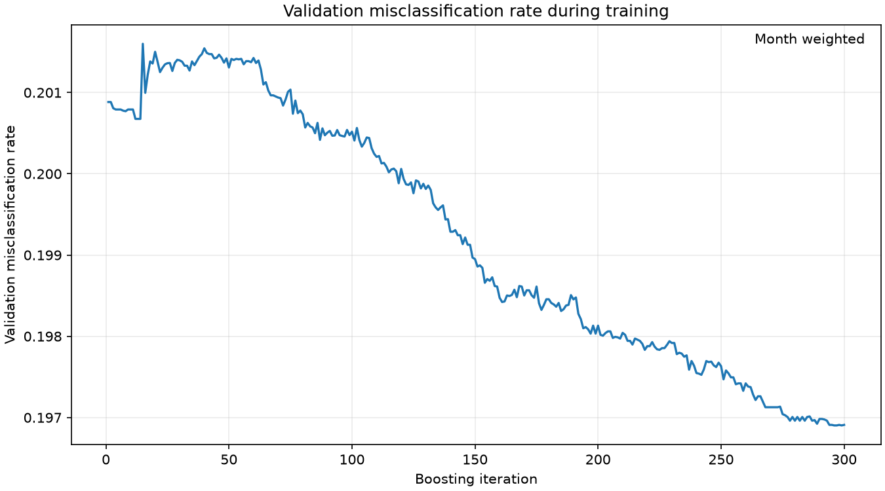
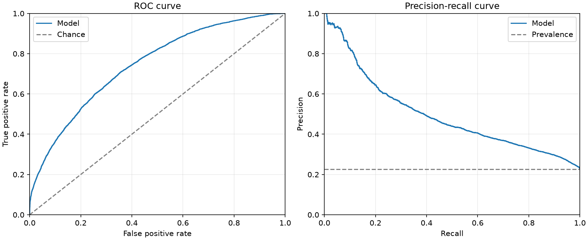
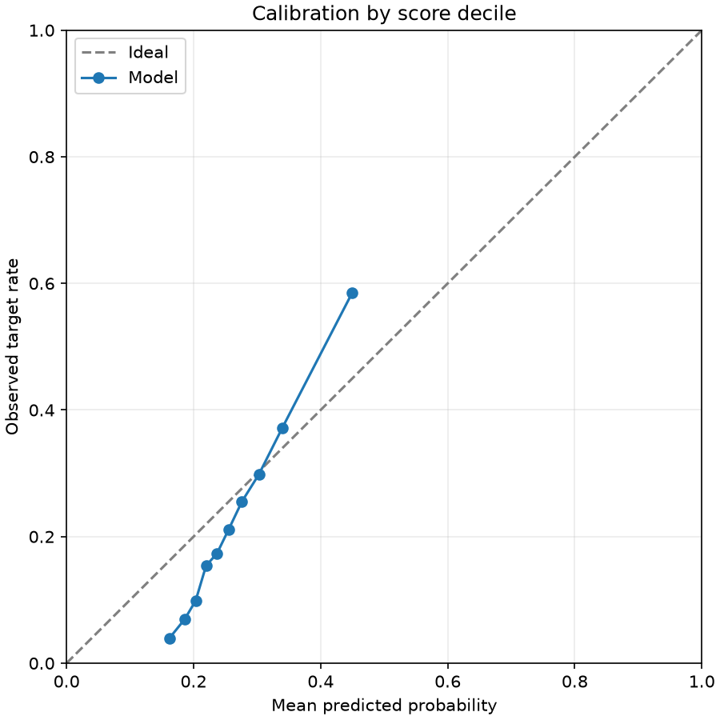
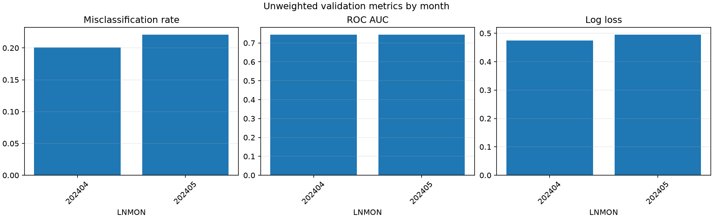
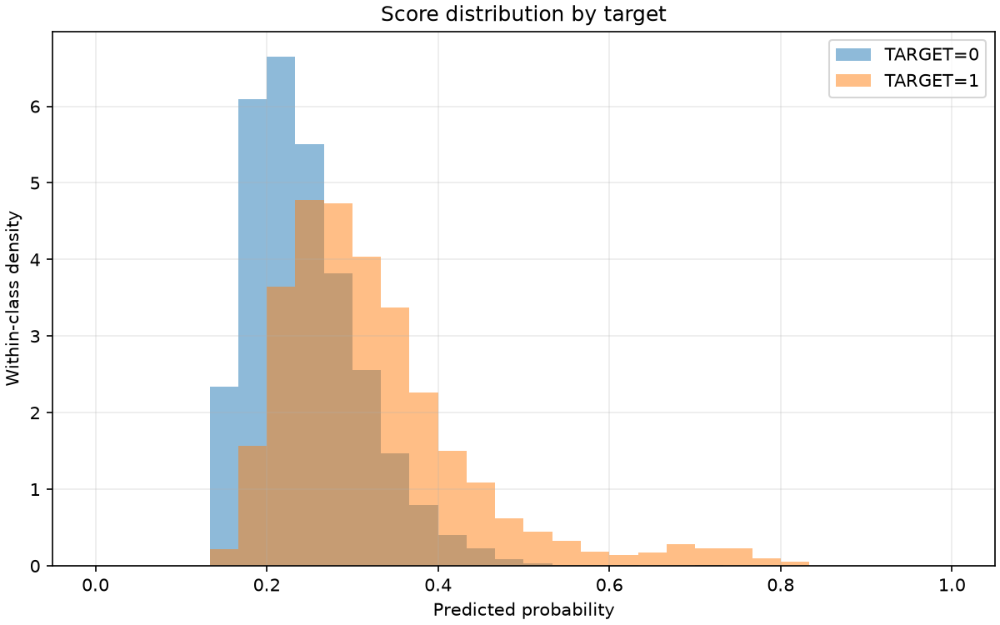
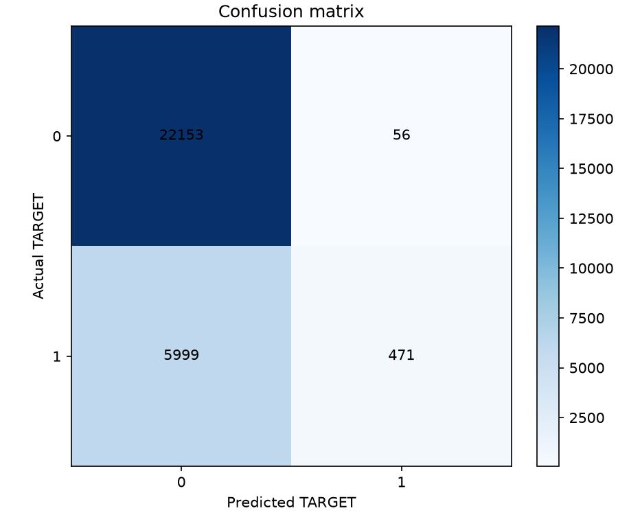

Final validation misclassification rate (overall_unweighted, probability > 0.5): 0.211130
Validation months: 202404, 202405. The training-history figure reflects the model's original training validation protocol. The results describe the supplied undersampled data and are not independent test scores.
| scope | month | rows | target_1_rows | target_1_rate | misclassification_rate | roc_auc | average_precision | log_loss | brier_score |
|---|---|---|---|---|---|---|---|---|---|
| overall_unweighted | all | 28679 | 6470 | 0.22560 | 0.21113 | 0.74441 | 0.49628 | 0.48554 | 0.15537 |
| monthly_unweighted | 202404 | 13966 | 2989 | 0.21402 | 0.20063 | 0.74349 | 0.48363 | 0.47491 | 0.15055 |
| monthly_unweighted | 202405 | 14713 | 3481 | 0.23659 | 0.22110 | 0.74479 | 0.50785 | 0.49564 | 0.15996 |
The first row is the metric recorded during training; the second row scores the selected validation protocol with the same metric.
| evaluation | protocol | months | month_weighted | metric | score |
|---|---|---|---|---|---|
| training_protocol | v2 | 202403,202404,202405 | True | misclassification_rate | 0.19691 |
| selected_protocol | v1 | 202404,202405 | False | misclassification_rate | 0.21113 |
| actual | predicted | rows | weight_sum |
|---|---|---|---|
| 0 | 0 | 22153 | 22153.00000 |
| 0 | 1 | 56 | 56.00000 |
| 1 | 0 | 5999 | 5999.00000 |
| 1 | 1 | 471 | 471.00000 |






| decile | rows | weight_sum | mean_probability | observed_target_rate |
|---|---|---|---|---|
| 1 | 2868 | 2868.00000 | 0.16182 | 0.03940 |
| 2 | 2868 | 2868.00000 | 0.18593 | 0.06939 |
| 3 | 2868 | 2868.00000 | 0.20323 | 0.09868 |
| 4 | 2868 | 2868.00000 | 0.21967 | 0.15411 |
| 5 | 2868 | 2868.00000 | 0.23679 | 0.17329 |
| 6 | 2868 | 2868.00000 | 0.25503 | 0.21095 |
| 7 | 2868 | 2868.00000 | 0.27619 | 0.25558 |
| 8 | 2868 | 2868.00000 | 0.30271 | 0.29812 |
| 9 | 2868 | 2868.00000 | 0.33960 | 0.37169 |
| 10 | 2867 | 2867.00000 | 0.44955 | 0.58493 |
The final classification score uses 0.5; other thresholds are diagnostics only.
| threshold | weighted_true_positive | weighted_false_positive | weighted_true_negative | weighted_false_negative | misclassification_rate | precision | recall | specificity | predicted_positive_share |
|---|---|---|---|---|---|---|---|---|---|
| 0.10000 | 6470.00000 | 22209.00000 | 0.00000 | 0.00000 | 0.77440 | 0.22560 | 1.00000 | 0.00000 | 1.00000 |
| 0.20000 | 6084.00000 | 15966.00000 | 6243.00000 | 386.00000 | 0.57017 | 0.27592 | 0.94034 | 0.28110 | 0.76886 |
| 0.30000 | 3247.00000 | 4144.00000 | 18065.00000 | 3223.00000 | 0.25688 | 0.43932 | 0.50185 | 0.81341 | 0.25771 |
| 0.40000 | 1162.00000 | 578.00000 | 21631.00000 | 5308.00000 | 0.20524 | 0.66782 | 0.17960 | 0.97397 | 0.06067 |
| 0.50000 | 471.00000 | 56.00000 | 22153.00000 | 5999.00000 | 0.21113 | 0.89374 | 0.07280 | 0.99748 | 0.01838 |
| 0.60000 | 263.00000 | 19.00000 | 22190.00000 | 6207.00000 | 0.21709 | 0.93262 | 0.04065 | 0.99914 | 0.00983 |
| 0.70000 | 134.00000 | 7.00000 | 22202.00000 | 6336.00000 | 0.22117 | 0.95035 | 0.02071 | 0.99968 | 0.00492 |
| 0.80000 | 12.00000 | 0.00000 | 22209.00000 | 6458.00000 | 0.22518 | 1.00000 | 0.00185 | 1.00000 | 0.00042 |
| 0.90000 | 0.00000 | 0.00000 | 22209.00000 | 6470.00000 | 0.22560 | NaN | 0.00000 | 1.00000 | 0.00000 |